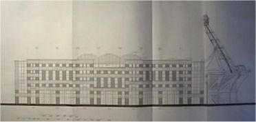

|
Bouwtekeningen oost |

Op deze tekening is te zien hoe de oostzijde er definitief uit
komt te
zien. Het 6 verdiepingen tellende gebouw waarin
o.m. een discotheek
wordt gevestigd laat links en rechts twee
identieke gedeeltes zien die
verder vooruitsteken dan het
middenste deel. De oostzijde wordt net
als de westzijde nog
hoger dan de noordgevel.
Op zuid zijn er plannen voor een hotel met 150 kamers met
aan de
buitenkant twee bulls-eye liften.